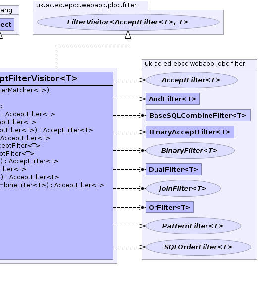

- java.lang.Object
-
- uk.ac.ed.epcc.webapp.jdbc.filter.ConvertPureAcceptFilterVisitor<T>
-
- Type Parameters:
T- type of filter
- All Implemented Interfaces:
- FilterVisitor<AcceptFilter<? super T>,T>
public class ConvertPureAcceptFilterVisitor<T> extends java.lang.Object implements FilterVisitor<AcceptFilter<? super T>,T>
Convert aBaseFilterto a pureAcceptFilter. If a non-nullFilterMatcheris supplied on construction then the conversion will always succeed. If the conversion is not possible then return null, unless throw_exception is set.- Author:
- spb
- See Also:
ConvertToAcceptFilter-


-
-
Constructor Summary
Constructors Constructor and Description ConvertPureAcceptFilterVisitor(FilterMatcher<T> matcher)
-
Method Summary
Methods Modifier and Type Method and Description booleangetThrowException()voidsetThrowException(boolean throw_exception)AcceptFilter<? super T>visitAcceptFilter(AcceptFilter<? super T> fil)process a pureAcceptFilterAcceptFilter<T>visitAndFilter(AndFilter<? super T> fil)process aAndFilteror its sub-types. this can combine any of the filter sub-types.AcceptFilter<? super T>visitBinaryAcceptFilter(BinaryAcceptFilter<? super T> fil)process aBinaryAcceptFilterObjects that accept this method can either act as aBinaryFilteror anAcceptFilterAcceptFilter<? super T>visitBinaryFilter(BinaryFilter<? super T> fil)process aBinaryFilterObjects that accept this method should generate a true or a false selection value.AcceptFilter<? super T>visitDualFilter(DualFilter<? super T> fil)process aDualFilter.AcceptFilter<? super T>visitJoinFilter(JoinFilter<? super T> fil)process aJoinFilter.AcceptFilter<? super T>visitOrderFilter(OrderFilter<? super T> fil)process a pureOrderFilter.AcceptFilter<? super T>visitOrFilter(OrFilter<? super T> fil)process aOrFilteror its sub-types. this can combine any of the filter sub-types.AcceptFilter<T>visitPatternFilter(PatternFilter<? super T> fil)process a purePatternFilter.AcceptFilter<T>visitSQLCombineFilter(BaseSQLCombineFilter<? super T> fil)process aBaseSQLCombineFilterthis combines all of the sub-classes exceptAccceptFilterand can be either AND or OR combinations.
-
-
-
Constructor Detail
-
ConvertPureAcceptFilterVisitor
public ConvertPureAcceptFilterVisitor(FilterMatcher<T> matcher)
- Parameters:
matcher- an optionalFilterMatcher
-
-
Method Detail
-
getThrowException
public boolean getThrowException()
-
setThrowException
public void setThrowException(boolean throw_exception)
-
visitPatternFilter
public AcceptFilter<T> visitPatternFilter(PatternFilter<? super T> fil) throws java.lang.Exception
Description copied from interface:FilterVisitorprocess a purePatternFilter. Objects that accept via this method. should also implementSQLFilter- Specified by:
visitPatternFilterin interfaceFilterVisitor<AcceptFilter<? super T>,T>- Throws:
java.lang.Exception- Returns:
-
visitSQLCombineFilter
public AcceptFilter<T> visitSQLCombineFilter(BaseSQLCombineFilter<? super T> fil) throws java.lang.Exception
Description copied from interface:FilterVisitorprocess aBaseSQLCombineFilterthis combines all of the sub-classes exceptAccceptFilterand can be either AND or OR combinations. This only combines filters that also implementSQLFilter.- Specified by:
visitSQLCombineFilterin interfaceFilterVisitor<AcceptFilter<? super T>,T>- Throws:
java.lang.Exception- Returns:
-
visitAndFilter
public AcceptFilter<T> visitAndFilter(AndFilter<? super T> fil) throws java.lang.Exception
Description copied from interface:FilterVisitorprocess aAndFilteror its sub-types. this can combine any of the filter sub-types.- Specified by:
visitAndFilterin interfaceFilterVisitor<AcceptFilter<? super T>,T>- Throws:
java.lang.Exception- Returns:
-
visitOrderFilter
public AcceptFilter<? super T> visitOrderFilter(OrderFilter<? super T> fil) throws java.lang.Exception
Description copied from interface:FilterVisitorprocess a pureOrderFilter. Objects that accept via this method. should also implementSQLFilter- Specified by:
visitOrderFilterin interfaceFilterVisitor<AcceptFilter<? super T>,T>- Throws:
java.lang.Exception- Returns:
-
visitAcceptFilter
public AcceptFilter<? super T> visitAcceptFilter(AcceptFilter<? super T> fil) throws java.lang.Exception
Description copied from interface:FilterVisitorprocess a pureAcceptFilter- Specified by:
visitAcceptFilterin interfaceFilterVisitor<AcceptFilter<? super T>,T>- Throws:
java.lang.Exception- Returns:
-
visitJoinFilter
public AcceptFilter<? super T> visitJoinFilter(JoinFilter<? super T> fil) throws java.lang.Exception
Description copied from interface:FilterVisitorprocess aJoinFilter. Objects that accept via this method should also implementSQLFilterand should not implement any other of the filter sub-types exceptPatternFilterwhichJoinFilterextends.- Specified by:
visitJoinFilterin interfaceFilterVisitor<AcceptFilter<? super T>,T>- Throws:
java.lang.Exception- Returns:
-
visitOrFilter
public AcceptFilter<? super T> visitOrFilter(OrFilter<? super T> fil) throws java.lang.Exception
Description copied from interface:FilterVisitorprocess aOrFilteror its sub-types. this can combine any of the filter sub-types.- Specified by:
visitOrFilterin interfaceFilterVisitor<AcceptFilter<? super T>,T>- Throws:
java.lang.Exception- Returns:
-
visitBinaryFilter
public AcceptFilter<? super T> visitBinaryFilter(BinaryFilter<? super T> fil) throws java.lang.Exception
Description copied from interface:FilterVisitorprocess aBinaryFilterObjects that accept this method should generate a true or a false selection value. They can also implementSQLFilter.- Specified by:
visitBinaryFilterin interfaceFilterVisitor<AcceptFilter<? super T>,T>- Throws:
java.lang.Exception- Returns:
-
visitDualFilter
public AcceptFilter<? super T> visitDualFilter(DualFilter<? super T> fil) throws java.lang.Exception
Description copied from interface:FilterVisitorprocess aDualFilter.- Specified by:
visitDualFilterin interfaceFilterVisitor<AcceptFilter<? super T>,T>- Throws:
java.lang.Exception- Returns:
-
visitBinaryAcceptFilter
public AcceptFilter<? super T> visitBinaryAcceptFilter(BinaryAcceptFilter<? super T> fil) throws java.lang.Exception
Description copied from interface:FilterVisitorprocess aBinaryAcceptFilterObjects that accept this method can either act as aBinaryFilteror anAcceptFilter- Specified by:
visitBinaryAcceptFilterin interfaceFilterVisitor<AcceptFilter<? super T>,T>- Throws:
java.lang.Exception- Returns:
-
-